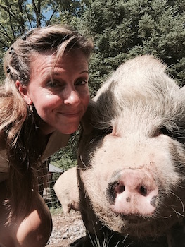
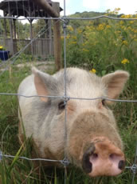

 The idea of Hope Haven was born in 2008 while I was driving to Pittsburgh from my hometown in Vermont. I was thinking about my career as a spay/neuter veterinary surgeon and how I loved working to stop the pet overpopulation problem. But recently I had been becoming upset by the number of unwanted ducks, pigs, and chickens being surrendered at the shelter. Farm animals cannot be properly housed at most shelters and I had been taking many of these animals home to care for myself. Rehabilitating a tiny pot-bellied piglet named Isaac had opened my eyes to the exuberant love-of-life farm animals feel. Isaac would romp and jump like a puppy, seek me out for companionship, and give me looks that were so expressive I always knew what he was “saying”. I shuddered at the thought of what would have happened to Isaac if he had gone to auction or to a worse fate. So during that long drive home from New England I asked myself this question, “What would I do with my life if I KNEW I couldn’t fail?” That question opened my eyes to my life’s purpose! I would start a farm animal sanctuary and raise public awareness to the plight of thousand of voiceless animals.
 After more than 4 long years of searching, the sanctuary property was purchased in June of 2011. It is a diamond-in-the-rough, but the potential will make your heart sing! The land is close enough to the city to invite visitors, but also has the perfect mix of pasture land and woods to keep many needy animals happy and safe. The little house has been renovated and currently is the home of the farm's founder. One day, we hope to offer it to a caretaker who will keep a watchful eye on the animals. A large outbuilding has been altered into a sturdy and expansive poultry house that even brags solar lighting! A beautiful bank barn welcomes the hoof stock and an expansive shed is the cozy home of the pig herd. A man-made pond was created explicitly for the pleasure of ducks and geese. There is a beautiful walking trail on the property, as well as environmental updates such as rain water barrels, a veggie garden, a small fruit orchid, and compost units.
This has all taken SO MUCH work, but the effort has had an unbelievable payoff. The joy and peace this sanctuary brings to visitors and animals is life-changing. It's extremely satisfying to know that Pittsburgh benefits from having this source for farm animal welfare information and humane education. The amazing story of Hope Haven is still in its infancy. We need YOUR help! I hope you all will join us on this great adventure.
Volunteer!
Donate!
Come visit the animals!
Get involved!
Spread the word!
Promote kindness!
And THANK YOU for all you do!
"The question is not, Can they reason? nor, Can they talk? but, Can they
suffer?"
- Jeremy Bentham, philospher

Contact Info:
Email:
Karen@HopeHavenFarm.org
UPCOMING EVENTS:
Hope Haven participates in many festivals and fundraisers during the open season of May through October. Please see the Events section of our monthly e-newsletter and the events tab of our FaceBook page to get involved with all the activities.
Our biggest upcoming event is Biscuits Bingo on March 4th, 2017. It takes place at IBEW Hall at 5 Hot Metal Street. There will be raffle baskets, door prices, and (obviously) BINGO! There's a $25 admission fee, which goes toward the benefiting organizations. Doors open at 10am and bingo starts at noon!
SOCIAL MEDIA:Please share us with your friends everywhere! Keep up with all the fun going on at the farm!!


IN THE NEWS:
Here are the various places that have featured Hope Haven!
Feature in November NEXT Pittsburgh
Short You Tube piece called Hope for Animals by Brians Art for Animals
July/August edition of Maniac Magazine, page 68-69
Feature on "Animal Talk with Tegan" on radio 1480 WCNS
Social Venture Partner's Fast Pitch competition
Setting the SEEN clip about Hope Haven Farm
Blog post about the Setting the SEEN clip
Great You Tube piece from Jillclimbs
Channel 11 News with Peggy Finnegan - Proud to be from Pittsburgh: Hope Haven Farm